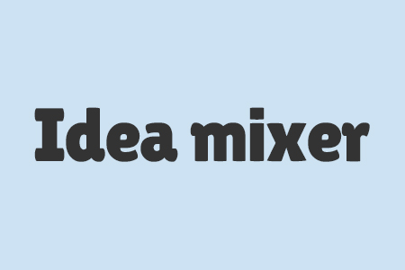

Message
初めまして、鈴木杏輔と申します。
Webエンジニアを目標に現在転職活動をしています。
6ヶ月間職業訓練(2019/12/20~2020/7/7)に通いスキルを磨き、その後web制作会社で働いて(2020/9/16~2021~2/20)いました。
About
- プロフィール
- 鈴木杏輔（すずききょうすけ）1996年生まれ、岐阜工業高校電子科卒業後4年と4ヶ月の間清涼飲料水充填工場の原料発注担当をしてきましたが、もっと楽しい仕事があるんじゃないかと思い、仕事の中で楽しかったと感じた瞬間を振り返ると、自分の成長を感じた時が楽しかったと思ったので、元々PCに興味があったし、IT業界は日々成長が求められる業界だと思うのでこの業界に入ってきました。 日々成長を楽しみながら日々プログラミング学習などをしています。
- 資格
-
- webクリエイター試験エキスパート
- Photoshopクリエイター試験エキスパート
- illustratorクリエイター試験エキスパート
- javaプログラミング能力認定試験2級
- パソコンスピード認定試験2級
- 普通自動車運転免許
- 普通自動二輪車（小型）
- 趣味
- かっこいい趣味は持ってないですが、映画鑑賞・漫画・ゲームなんかが好きです（笑）
Skill
プログラミング関係
- HTML
- 前職でWebサイトのコーディングをしていたので、適切なタグを使うことができます
- CSS
- パララックス、簡単なアニメーション、図形を描いたりなどは経験しましたが、とても高度なCSSは経験ありません
- Javascript(Jquery)
- Jqueryを使用して色々なプラグインを扱い、webサイトの構築をできます
- Ruby
- 参考書を使って基礎学習をしました
- Rails
- Web教材を使用して基礎学習を行いました
- SQL
- 職業訓練校やweb教材で基礎を学習しました
- Github
- 実務では使用したことありませんが、web教材で学習してポートフォリオアプリのIdea mixer作成時に使用していました
- Docker
- web教材で学習して、ポートフォリオアプリのIdea mixer作成時に使用していました
- Circle ci/cd
- Web教材で学習して、ポートフォリオアプリのIdea mixer作成時に使用していました
- Linux
- Web教材で基礎を学習しました
- PHP
- 問い合わせフォームを作成したりできます
- Java
- 職業訓練校時代に少し触った程度です
デザイン関係
- デザインについて
- 参考書を使用してフォント、レイアウトなどについてデザインの基礎を少し学習しました
- Photoshop
- 基礎を職業訓練校で学び、たまにプライベートで簡単な画像編集などをしていました
- adobeXD
- Webの教材で学習しました、Idea mixerのアプリ作成時のカンプ作成に使用しました
- illustrator
- 職業訓練校基礎を学びそれ以降ほとんど使用していません
学習に使用した主な教材
- たのしいRuby第６版
- Rails チュートリアル
- Linux標準教科書
- キタミ式イラストIT塾基本情報技術者
- リーダブルコード ―より良いコードを書くためのシンプルで実践的なテクニック
- ノンデザイナーズ・デザインブック第４版
- 【Udemy】Git： もう怖くないGit！チーム開発で必要なGitを完全マスター
- 【Udemy】ゼロからはじめる Dockerによるアプリケーション実行環境構築
- 【Udemy】【2020年最新版】Adobe XD 手を動かして覚えるUI/UXプロトタイピング。初級から高度テクニックまで全てを学ぶ
- 【Udemy】[HTML/CSS/JavaScript] フロントエンドエンジニアになりたい人の Webプログラミング入門
- Progate Rubyコース
- Progate Ruby on Railsコース
- Progate Javascript コース
- Progate HTML CSSコース
Work
-

Idea mixer
- 使用技術
- HTML,SCSS,Javascript,Ruby,Rails,ajax,Docker/Docker-compose,Circle CI/CD,Minitest,Mailgun
- サーバー
- Heroku,Puma
- DB
- Mysql
- 概要
- ランダムに出力されるテーマから新しいアイデアを考えるサービスです。
- 機能
- ユーザー登録、登録情報の変更、ログイン、ログアウト、ユーザーアイコン画像変更、文章投稿、投稿削除、投稿のお気に入り登録、ランダムなテーマの出力
- GitHubソースコード
- https://github.com/umuri99/idea-mixer
-
Rails tutorialのサンプルアプリ
- 使用技術
- HTML,SCSS,Javascript,Ruby,Rails,ajax,Minitest,Mailgun
- サーバー
- AWS,Heroku,Puma
- DB
- postgresql
- 概要
- Rails tutorialというWeb上の教材で作成した、twitterの様な機能をもったSNSアプリケーションです。
- 機能
- ユーザー登録、登録情報の変更、管理者アカウントによる登録ユーザーの削除、ユーザーアイコン画像変更、フィード機能、ログイン、ログアウト、文章投稿、画像投稿、投稿削除、ユーザー間でのフォロー
- GitHubソースコード
- https://github.com/umuri99/sample_app